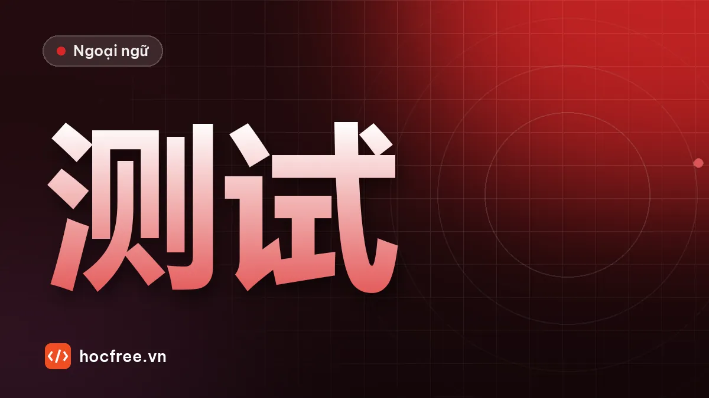

Bài kiểm tra tổng hợp tuần 5: pinyin, chào hỏi, số, thời gian
Bài tự kiểm tra 30 câu gồm pinyin, từ vựng, ngữ pháp, đọc hiểu và dịch câu, có đáp án, bảng phân loại lỗi và điều kiện để sang HSK 1.

Học xong bài này, bạn sẽ
- Tự kiểm tra kiến thức 5 tuần đầu
- Phân loại lỗi theo từ vựng, ngữ pháp, đọc, viết
- Quyết định sang giai đoạn HSK 1 hay ôn lại
Nên học trước: Gia đình, 有 và 没有, lượng từ 个/口
Nội dung bài viết
Bạn đã học 5 tuần: pinyin, chữ Hán, chào hỏi, câu hỏi, số đếm, ngày giờ và gia đình. Đây là bài kiểm tra tổng hợp đầu tiên. Làm trong 40 phút, không tra từ, không xem lại bài. Chấm xong mới quyết định sang giai đoạn HSK 1 hay ôn lại.
Phần 1. Pinyin (5 câu)
Viết pinyin có dấu thanh:
1. 谢谢 2. 老师 3. 星期 4. 越南 5. 女儿
Phần 2. Từ vựng (5 câu)
Viết nghĩa tiếng Việt:
6. 认识 7. 下班 8. 同事 9. 现在 10. 没关系
Phần 3. Ngữ pháp: chọn đáp án đúng (8 câu)
11. 我___有妹妹。 A. 不 B. 没 C. 也不
12. 我家有五___人。 A. 个 B. 口 C. 几
13. 我有___个哥哥。 A. 二 B. 两 C. 第二
14. 你女儿___岁？ A. 几 B. 多少 C. 什么
15. 他们___是医生。 A. 也都 B. 都也 C. 也和
16. 我___上班。 A. 是八点 B. 八点 C. 八点是
17. 你是中国人___？ A. 呢 B. 吗 C. 什么
18. 我很好，你___？ A. 吗 B. 呢 C. 吧
Phần 4. Đọc hiểu (6 câu)
Đọc đoạn văn rồi trả lời Đúng (Đ) hoặc Sai (S).
我叫陈兰，我是越南人。我今年二十七岁，是工程师。我家有四口人：爸爸、妈妈、弟弟和我。我爸爸是医生，我妈妈是老师。我弟弟是学生，他十九岁。我没有姐姐。我星期一到星期五上班，早上八点上班，下午五点半下班。
19. 陈兰是中国人。
20. 她是工程师。
21. 她家有五口人。
22. 她妈妈是医生。
23. 她有一个弟弟。
24. 她下午五点半下班。
Từ mới: 到 dào (đến). 星期一到星期五 = từ thứ Hai đến thứ Sáu.
Phần 5. Dịch và viết (6 câu)
Dịch sang tiếng Trung (viết chữ Hán; chữ nào chưa nhớ được viết pinyin):
25. Bạn tên là gì?
26. Tôi cũng không uống cà phê.
27. Hôm nay thứ mấy?
28. Bây giờ là 3 giờ rưỡi chiều.
29. Số điện thoại của bạn là bao nhiêu?
30. Chúng ta họp lúc 9 giờ sáng thứ Hai.
Đáp án
Xem đáp án 30 câu
- xièxie
- lǎoshī
- xīngqī
- Yuènán
- nǚ'ér
- quen biết
- tan làm
- đồng nghiệp
- bây giờ
- không sao
- B (phủ định 有 bằng 没)
- B (đếm người trong nhà dùng 口)
- B (trước lượng từ dùng 两)
- A (tuổi trẻ nhỏ, số nhỏ)
- A (thứ tự 也都)
- B (thời gian trước động từ, không cần 是)
- B
- B
- S (cô ấy là người Việt Nam)
- Đ
- S (bốn người)
- S (mẹ là giáo viên, bố là bác sĩ)
- Đ
- Đ
- 你叫什么名字？
- 我也不喝咖啡。
- 今天星期几？
- 现在下午三点半。
- 你的手机号是多少？
- 我们星期一上午九点开会。
Chấm điểm và phân loại lỗi
Mỗi câu 1 điểm, tổng 30 điểm. Phần dịch: câu đúng ngữ pháp nhưng sai một chữ Hán vẫn được 0,5 điểm.
| Phần | Câu | Mã lỗi | Nếu sai nhiều, ôn bài |
|---|---|---|---|
| Pinyin | 1–5 | P | Thanh điệu, vận mẫu |
| Từ vựng | 6–10 | V | Ôn thẻ Anki, thêm câu ví dụ cho từ hay quên |
| Ngữ pháp | 11–18 | G | 吗, 不, 也, 都, 有, lượng từ |
| Đọc hiểu | 19–24 | Đ | Đọc to lại các hội thoại, tập đọc không nhìn pinyin |
| Viết | 25–30 | W, G | Ngày giờ và trật tự câu |
Điều kiện chuyển giai đoạn
- 24–30 điểm (từ 80%): sang giai đoạn 3, HSK 1.
- 21–23 điểm (70–79%): sang giai đoạn 3, nhưng tuần tới dành ngày 5 để ôn phần sai nhiều nhất.
- Dưới 21 điểm: chưa chuyển. Dành 3 ngày ôn theo bảng trên, rồi tự soạn 20 câu tương tự (đổi tên người, số, giờ trong đề) và làm lại. Đạt 70% mới đi tiếp.
Bài nói tự kiểm tra
Ngoài phần viết, ghi âm 45 giây trả lời liền 4 câu hỏi sau, không nhìn giấy:
- 你叫什么名字？你是哪国人？
- 你今年多大？
- 你家有几口人？
- 你几点上班？几点下班？
Tự chấm 3 tiêu chí, mỗi tiêu chí 0–2 điểm: thanh điệu (thanh 1 đủ cao, thanh 4 rơi mạnh), ngữ pháp (thời gian trước động từ, 两 trước lượng từ), trôi chảy (không ngắt quá 3 giây). Lưu bản ghi để so sánh ở bài kiểm tra HSK 1.
Câu 1 có từ 哪国 nǎ guó (nước nào): 你是哪国人？ = Bạn là người nước nào? Từ để hỏi 哪 sẽ học ở bài tiếp theo.
Bài tiếp theo mở đầu giai đoạn HSK 1: từ để hỏi.
Bài tập thực hành
- Làm bài kiểm tra trong 40 phút, không tra từ, rồi chấm theo đáp án.
- Ghi mọi câu sai vào sổ lỗi theo mã V, G, Đ, W và ôn lại bài gốc của từng lỗi.
Làm xong bài tập mới chuyển sang bài tiếp theo: đọc to, tự viết chữ Hán và tự chấm đáp án là cách duy nhất để nhớ lâu.